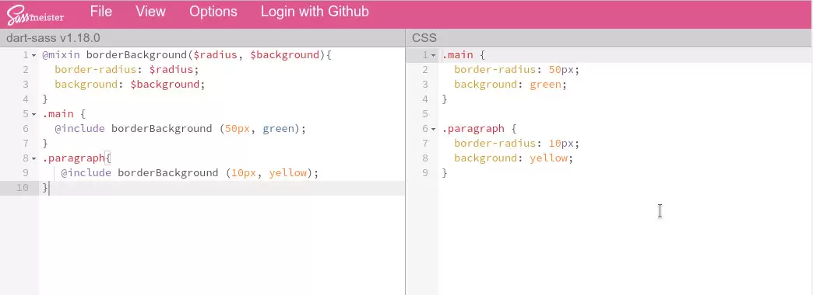
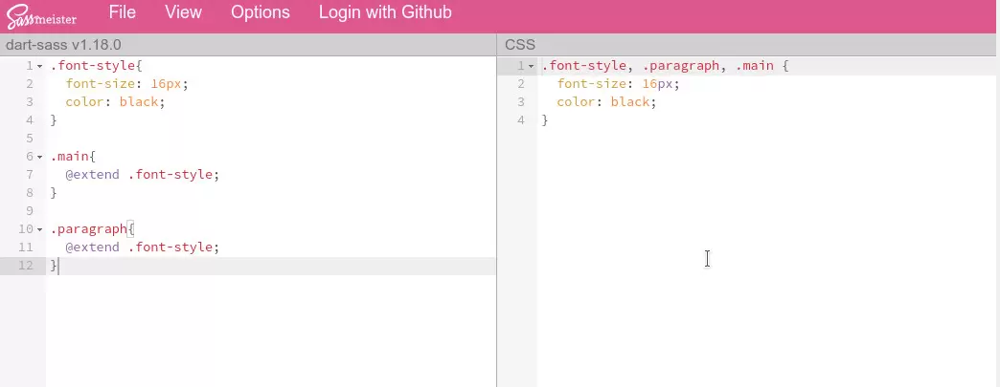
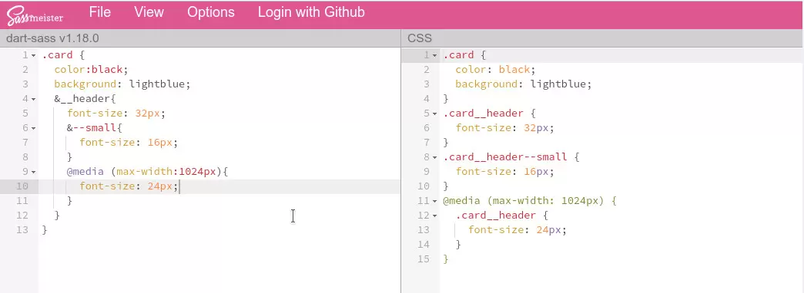

Rozdział szósty
Objekty
Obiekt jest strukturą danych w JS.
key:value (klucz:wartość) - format zapisu własności (property), metod (methods) obiektu
klucz - musi być unikalny w ramach obiektu
wartość - prymitywy / funkcje / zagnieżdżenia
Dot notation - notacja kropkowa:
const deathStar = {
diameter: 120000,
fire: (target) => {
console.log(`${target} destroyed 💥`)
},
isOperating: true,
levels: 357,
name: 'Death Star',
population: 10000,
}
deathStar.population
Bracket notation - notacja nawiasów:
const deathStar = {
diameter: 120000,
fire: (target) => {
console.log(`${target} destroyed 💥`)
},
isOperating: true,
levels: 357,
name: 'Death Star',
population: 10000,
}
deathStar["population"]
JSON = JavaScript Object Notation, uniwersalny format wymiany danych.
{
"diameter": 120000,
"isOperating": true,
"levels": 357,
"name": "Death Star",
"population": 10000,
}
Pseudoelementy
Pesudoelement umożliwia stylizowanie określonej części elementu, może dodawać treść. Jest częścią elementu, więc wszystkie zmiany zachodzące są w obrębie tego elementu.
- element::before - występuje przed treścią elementu
- element::after - występuje po treści elementu
- content: " " - dodaje treść do pseudoelementów before i after
- element::first-line - stylowanie pierwszej lini treści w elemencie blokowym
- element::first-letter - dotyczy pierwszej litery w pierwszym wierszu elementu blokowego
Pseudoklasy
- selektor:hover - wskazuje element, zmienia stan elementu po najechaniu
- selektor:visited - odpowiada za odwiedzone linki
- selektor:focus - odpowiada za aktywne pole input
- selektor:first-child - reprezentuje pierwsze dziecko elementu
- selektor:last-child - reprezentuje ostatnie dziecko elementu
- selektor:not(selektor) - odpowiada za elementy niepasujące do listy selektorów
Sass
Sass jest preprocesorem CSS, dzięki któremu stylizowanie jest efektywniejsze, szybsze a sam kod staje się bardziej uporządkowany, co za tym idzie czytelniejszy.
Sass oferuje dwie składnie pisania. Składnia SASS, która opiera się na wcięciach, oraz SCSS, która używa nawiasów klamrowych podobnie jak CSS.
$zmienna - definiowanie zmiennej
@mixin @include - przykład domieszki:
@extend - przykład:
& - parent selector:
 https://sass-lang.com/documentation https://www.sassmeister.com/Node.js
Node.js to środowisko do uruchamiania aplikacji napisanych w języku JS poza przeglądarką.
https://nodejs.orgnpm - menadżer paczek rozszerzających funkcjonalność środowiska node.js
npm init - polecenie które tworzy pakiet npm, wynikiem jest plik packages.json zawierający informacje dotyczące naszego projektu. Dzięki temu możemy podzielić się projektem publicznie i może być on rozwijany przez inne osoby.
npm install <nazwa_paczki> --save - instalacja paczki, wykorzystujemy wtedy kiedy paczki są niezbędne do uruchamiania aplikacji.
npm install <nazwa_paczki> --save-dev - wykorzystujemy wtedy kiedy paczka jest niezbędna do rozwijania i testowania aplikacji.
node_modules - katalog zawierający zainstalowane paczki. Ten katalog nie dodajemy do repozytorium projektu.
.gitignore
W przypadku repozytorium GIT tworzymy plik ".gitignore" i umieszczamy w nim nazwę katalogu "node_modules".
Alternatywą dla npm jest YARN
https://yarnpkg.comWTF GULP STARTER KIT
Pobranie WTF GULP STARTER KIT:
git clone https://github.com/maciejkorsan/wtf-gulp-starter
Gulp - task runner, służy do automatyzacji zadań w projekcie.
https://gulpjs.comnpm install gulp-cli --global - instalacja gulpa globalnie
npm install - instalacja brakujących paczek, ponownie używamy do aktualizacji wersji albo do instalacji własnej paczki
gulp - uruchomienie automatyzacji zadań
npm run deploy - publikacja projektu na GitHub Pages